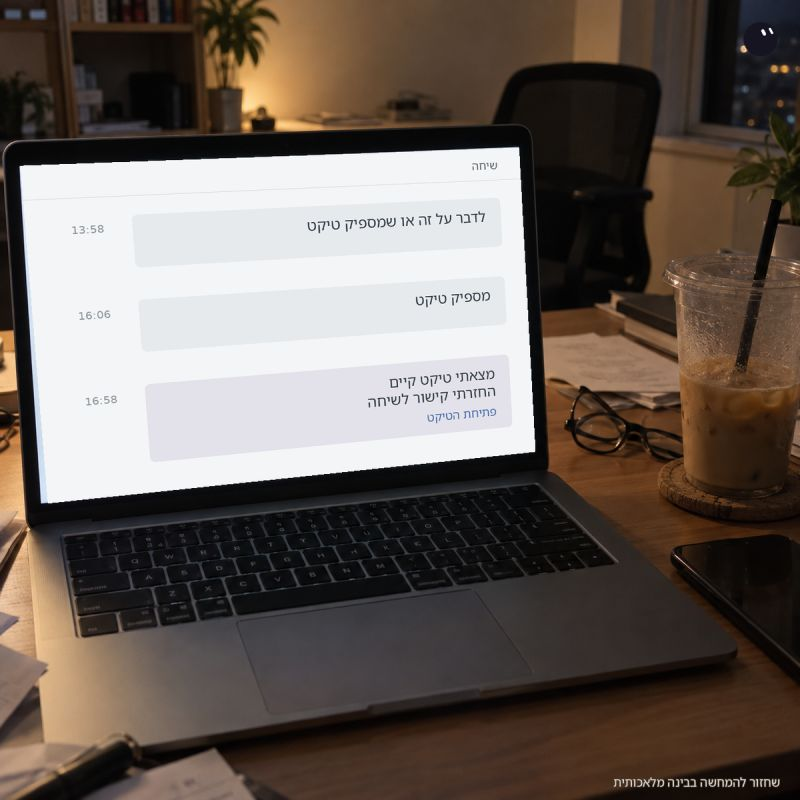

התשובה הגיעה אחרי כמה שעות. אני כבר שכחתי ששאלתי.
פורסם במקור ב LinkedIn
התשובה הגיעה אחרי כמה שעות. אני כבר שכחתי ששאלתי.
בת'רד בעבודה שאלתי אם צריך לדבר על הנושא, או שמספיק טיקט.
במקביל ביקשתי מ-Grok Bot: חכה לתשובה. אם מספיק טיקט, תטפל בזה לפי ההנחיות שלי ותחזיר קישור.
התשובה הגיעה: מספיק טיקט.
הבוט חזר לת'רד, קרא את ההקשר ומצא שכבר יש טיקט מתאים. הוא השתמש בקיים במקום לפתוח כפילות, והחזיר את הקישור.
אני המשכתי לעבוד על דברים אחרים.
זה אחד הדברים שאני הכי אוהב בשימוש הזה. משימה יכולה לכלול גם כמה שעות שבהן שום דבר לא קורה. גם את הזמן הזה מישהו צריך להחזיק.
פעם הייתי מחזיק אותו בראש: לחכות, לזכור לחזור, לבדוק מה ענו.
היום אני יכול לתת לבוט גם את ההמתנה וגם תנאי ברור להמשך. וכשהתשובה מגיעה, העבודה ממשיכה.
